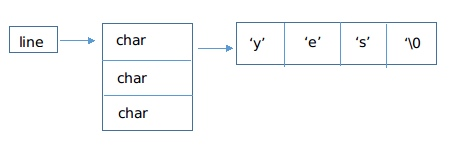
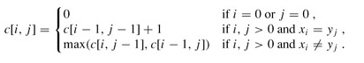
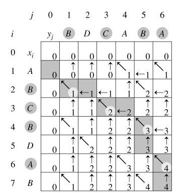

文件比较
1.按行将文本文件内容打印到屏幕
任务描述：
- 按行读取文本文件内容并输出到新的文件中
- 命令行中以文件名做输入参数
相关知识：
- FILE *fopen(const char *path, const char *mode)：打开一个文件，返回指向FILE结构体的指针
- ssize_t getline(char **lineptr, size_t *n, FILE *stream)：从文件流中读取一行字符串，并将字符串的地址存储到lineptr指向的指针中。返回的字符串以空字符'\0'结尾，同时包含换行符。参数n表示一次最多能读的字符数。
如果在调用getline之前，设置了*lineptr为NULL，*n被设置为0，那么getline将会分配一个缓冲区来存储读取的一行字符串。则会个缓冲区应当由用户程序进行释放。释放时通过调用free函数进行。
main.c:
#include "stdio.h" #include "stdlib.h" int main(int argc,char *argv[]){ FILE *fp; char *line=NULL; size_t len=0; ssize_t read; if(argc!=2){ perror("argc error\n"); exit(1); } fp=fopen(argv[1],"r"); if(fp==NULL){ perror("fopen error\n"); exit(EXIT_FAILURE); } while((read=getline(&line,&len,fp))!=-1) printf("%s",line); free(line); fclose(fp); return 0; }
2.字符串数组练习
任务描述：
- 使用二维数组创建字符串数组，把输入的多个字符串存储到字符串数组中，最后打印输出字符串数组
main.c:
#include "stdio.h" #include "stdlib.h" #include "string.h" #define N 20 int main(void){ char str[N][N];int a,i; printf("please input your string number\n"); scanf("%d\n",&a); for(i=0;i<a;i++) scanf("%s",str[i]); printf("your input string is \n"); for(i=0;i<a;i++) printf("%s\n",str[i]); return 0; }
3.字符串数组
任务描述：
- 从键盘输入多个字符串，使用malloc函数创建字符串数组，把输入的多个字符串存储到字符串数组中，最后打印输出字符串数组
相关知识：
void *malloc(size_t size)：分配了size个字节，并返回了指向这块内存的指针
指向指针的指针
如果一个指针变量的类型是“指向指针的指针”，那么这个指针变量对应的内存中存储的是一个指针值，这个指针值指向的内存中存储的也是一个指针。
比如：char ** lines = (char *)malloc(3sizeof(char*)).那么在内存里面lines的表示为：

用malloc分配一个内存空间，包含3个指向字符的指针，返回一个指向内存空间首地址的指针lines，该指针类型就是指向指针的指针
- void free(void *ptr)：释放ptr指向的存储空间
被释放的空间通常被送入可用存储区池，以后可在调用malloc、realloc以及calloc函数来再分配。使用malloc分配的内存，需要自己调用free函数进行内存释放，否则，会造成内存泄漏的情况。
main.c:
#include "stdio.h" #include "stdlib.h" #include "string.h" #define SIZE 20 int main(void){ char **strArray=NULL; char buf[SIZE]; int i,strNum; printf("please input number\n"); scanf("%d",&strNum); strArray=(char **)malloc(strNum*sizeof(char *)); for(i=0;i<strNum;i++){ strArray[i]=(char *)malloc(SIZE*sizeof(char)); memset(buf,'\0',sizeof(buf)); scanf("%s",buf); strcpy(strArray[i],buf); } printf("your input string is\n"); for(i=0;i<strNum;i++){ printf("%s\n",strArray[i]); free(strArray[i]); } free(strArray); return 0; }
4.使用qsort库函数对整数数组由小到大进行排序
任务描述：
- 由终端输入n行，每行包含一个整数。对这n个整数进行由小到大的排序，然后输出排序后的整数
相关知识：
- void qsort(void base,int nelem,int width,int (fcmp)(const void *,const void *))：
参数：
base: 待排序数组首地址
nelem：数组中待排序元素数量
width：数组元素的大小
fcmp: 函数指针，用于比较数组中两个元素的大小，确定两个元素的先后顺序。这个函数需要自己定义,qsort在执行的过程中，会调用这个函数，来比较两个元素的大小，据此，确定两个元素的先后顺序
main.c:
#include "stdio.h" #include "stdlib.h" #include "string.h" #define N 50 int sort_function( const void *a, const void *b); int main(void){ int a,i,n;int num[N]; printf("please input number\n"); scanf("%d",&a); printf("before sorting the number is:\n"); for(i=0;i<a;i++) scanf("%d",&num[i]); //n=strlen(num); for(i+0;i<a;i++) printf("%d\n",num[i]); qsort((void *)num,a,sizeof(int),sort_function); printf("after sorting the number is:\n"); for(i=0;i<a;i++) printf("%d\n",num[i]); return 0; } int sort_function( const void *a, const void *b){ return(*(int*)a-*(int*)b); }
5.对文本文件各行字符串排序并打印
任务描述：
- 对一个文本文件的各行字符串按照字母表顺序进行排序，并打印输出排序后的各行字符串
- 命令行中以文本文件名做输入参数，打印各行排序后的结果
- 字母表顺序
按照字母ASCII码的大小进行的排序。从左到右依次比较每个位置上字母的ASCII码大小。如果有不同的字母，则可以确定两个字符串的顺序。如果一个字符串是另一个字符串的子集，则长度较短的字符串排在长度较长的字符串的前面。26个英文字母的ASCII码从小到大依次增长。
比如：“a” < “b”, “abca” < “abdd”, “abc” < “abcd”
main.c:
#include "stdio.h" #include "stdlib.h" #include "string.h" #define N 50 int sort_function(const void *a, const void *b); int main(int argc,char *argv[]){ FILE *fp; char *line=NULL; size_t len=0; ssize_t read; char buf[N][N]; int i=0,a=0,b=0; if(argc!=2){ perror("argc error\n"); exit(1); } fp=fopen(argv[1],"r"); if(fp==NULL){ perror("argv error\n"); exit(1); } printf("before sorting the string is:\n"); while((read=getline(&line,&len,fp))!=-1){ strcpy(buf[i],line); printf("%s",line); i++; } qsort(buf,i,sizeof(buf[0]),sort_function); printf("after sorting the string is:\n"); for(a=0;a<i;a++) printf("%s",buf[a]); free(line); return 0; } int sort_function(const void *a, const void *b){ char *str1 = (char *)a; char *str2 = (char *)b; return strcmp(str1,str2); }
6.删除文本文件重复的行，并将结果保存到新的文件中
任务描述：
- 对重复的行只保留，新文件中的文本行按照字母表顺序排列，保持原文件内容不变
- 命令行以原文件名和文件名做参数，结果保存在新文件中。
main.c:
#include "stdio.h" #include "stdlib.h" #include "string.h" #define N 50 int sort_function(const void *a, const void *b); int main(int argc,char *argv[]){ FILE *fp1,*fp2; char *line=NULL; size_t len=0; ssize_t read; char buf[N][N]; int i=0,a=0,b=0; if(argc!=3){ perror("argc error\n"); exit(1); } fp1=fopen(argv[1],"r"); if(fp1==NULL){ perror("argv1 error\n"); exit(1); } fp2=fopen(argv[2],"w"); if(fp2==NULL){ perror("argv2 error\n"); exit(1); } while((read=getline(&line,&len,fp1))!=-1){ strcpy(buf[i],line); i++; } fwrite(buf[0],1,strlen(buf[0]),fp2); //a=i; for(a=1;a<i;a++){ if(strcmp(buf[a],buf[a-1])==0) continue; else fwrite(buf[a],1,strlen(buf[a]),fp2); } free(line); return 0; }
7.求两个已按字母表顺序排好序且没有重复行的文本文件的并集
任务描述：
- 求两个已按字母表顺序排好序且没有重复行的文本文件的并集，并将结果写入到新文件中
- 新文件也要求是按字母表顺序排好序的，且没有重复行的
main.c:
#include "stdio.h" #include "stdlib.h" #include "string.h" #define N 50 int sort_function( const void *a, const void *b); int main(int argc,char *argv[]){ FILE *fp1,*fp2,*fp3; char *line1=NULL,*line2=NULL; size_t len1=0,len2=0; ssize_t read; int i=0,cmprel,num1,num2; if(argc!=3){ perror("argc error\n"); exit(1); } fp1=fopen(argv[1],"r"); if(fp1==NULL){ perror("argv1 error\n"); exit(1); } fp2=fopen(argv[2],"r"); if(fp2==NULL){ perror("argv2 error\n"); exit(1); } fp3=fopen("bingji","w"); if(fp3==NULL){ perror("argv3 error\n"); exit(1); } num1=getline(&line1,&len1,fp1); num2=getline(&line2,&len2,fp2); while(num1!=-1&&num2!=-1){ cmprel=strcmp(line1,line2); if(cmprel<0){ fwrite(line1,1,strlen(line1),fp3); num1=getline(&line1,&len1,fp1); }else if(cmprel>0){ fwrite(line2,1,strlen(line2),fp3); num2=getline(&line2,&len2,fp2); }else{ fwrite(line1,1,strlen(line1),fp3); num1=getline(&line1,&len1,fp1); num2=getline(&line2,&len2,fp2); } } while(num1!=-1){ fwrite(line1,1,strlen(line1),fp3); num1=getline(&line1,&len1,fp1); } while(num2!=-1){ fwrite(line2,1,strlen(line2),fp3); num2=getline(&line2,&len2,fp2); } free(line1);free(line2); fclose(fp1);fclose(fp2);fclose(fp3); return 0; }
8、求两个已按字母表顺序排好序且没有重复行的文本文件的交集
任务描述：
- 求两个已按字母表顺序排好序且没有重复行的文本文件的交集，并将结果写入到新文件中
- 新文件也要求是按字母表顺序排好序的，且没有重复行的
相关知识：
- 使用getline函数读取文本文件中的文本行
- 使用malloc函数分配内存空间存储文本文件中的内容
- 先利用最长公共子序列算法来求出两个文本文件的最长公共子序列。其中最长公共子序列中的每个元素都是文本文件中的一行文本
- 这个最长公共子序列就是两个文件的交集
main.c:
#include "stdio.h" #include "stdlib.h" #include "string.h" #define N 50 int sort_function( const void *a, const void *b); int main(int argc,char *argv[]){ FILE *fp1,*fp2,*fp3; char *line1=NULL,*line2=NULL; size_t len1=0,len2=0; ssize_t read; int i=0,cmprel,num1,num2; if(argc!=3){ perror("argc error\n"); exit(1); } fp1=fopen(argv[1],"r"); if(fp1==NULL){ perror("argv1 error\n"); exit(1); } fp2=fopen(argv[2],"r"); if(fp2==NULL){ perror("argv2 error\n"); exit(1); } fp3=fopen("jiaoji","w"); if(fp3==NULL){ perror("argv3 error\n"); exit(1); } num1=getline(&line1,&len1,fp1); num2=getline(&line2,&len2,fp2); while(num1!=-1&&num2!=-1){ cmprel=strcmp(line1,line2); if(cmprel<0) num1=getline(&line1,&len1,fp1); else if(cmprel>0) num2=getline(&line2,&len2,fp2); else{ fwrite(line1,1,strlen(line1),fp3); num1=getline(&line1,&len1,fp1); num2=getline(&line2,&len2,fp2); } } while(num1!=-1) num1=getline(&line1,&len1,fp1); while(num2!=-1) num2=getline(&line2,&len2,fp2); free(line1);free(line2); fclose(fp1);fclose(fp2);fclose(fp3); return 0; }
9.求两个已按字母表顺序排好序且没有重复行的文本文件的差集
相关知识：
- 使用getline函数读取文本文件中的文本行
- 使用malloc函数分配内存空间存储文本文件中的内容
- 先利用最长公共子序列算法来求出两个文本文件的最长公共子序列。其中最长公共子序列中的每个元素都是文本文件中的一行文本。
- 这个最长公共子序列就是两个文件的交集。
- 根据这个交集，从第二个文件中输出和交集中元素不同的文本行，从而就可以求出第二个文件与第一个文件的差集。
- 公共最长子序列
什么是最长公共子序列呢?好比一个数列 S，如果分别是两个或多个已知数列的子序列，且是所有符合此条件序列中最长的，则S 称为已知序列的最长公共子序列。举个例子，如：有两条随机序列，如 1 3 4 5 5 ，and 2 4 5 5 7 6，则它们的最长公共子序列便是：4 5 5。
注意最长公共子串（Longest CommonSubstring）和最长公共子序列（LongestCommon Subsequence, LCS）的区别：子串（Substring）是串的一个连续的部分，子序列（Subsequence）则是从不改变序列的顺序，而从序列中去掉任意的元素而获得的新序列；更简略地说，前者（子串）的字符的位置必须连续，后者（子序列LCS）则不必。比如字符串acdfg同akdfc的最长公共子串为df，而他们的最长公共子序列是adf。LCS可以使用动态规划法解决。下文具体描述。事实上，最长公共子序列问题也有最优子结构性质，可以考虑用动态规划算法来计算。用c[i,j]记录序列Xi和Yj的最长公共子序列的长度。其中Xi= < x1, x2, …, xi>，Yj=< y1, y2, …, yj >。当i=0或j=0时，空序列是Xi和Yj的最长公共子序列，故c[i,j]=0。其他情况下，由定理可建立递归关系如下：

计算最长公共子序列长度的动态规划算法LCS_LENGTH(X,Y)以序列X=< x1, x2, …, xm >和Y=< y1, y2, …, yn >作为输入。输出两个数组c[0..m ,0..n]和b[1..m ,1..n]。其中c[i,j]存储Xi与Yj的最长公共子序列的长度，b[i,j]记录指示c[i,j]的值是由哪一个子问题的解达到的，这在构造最长公共子序列时要用到。最后，X和Y的最长公共子序列的长度记录于c[m,n]中。
main.c:
Procedure LCS_LENGTH(X,Y); begin m:=length[X]; n:=length[Y]; for i:=1 to m do c[i,0]:=0; for j:=1 to n do c[0,j]:=0; for i:=1 to m do for j:=1 to n do if x[i]=y[j] then begin c[i,j]:=c[i-1,j-1]+1; b[i,j]:="↖"; end else if c[i-1,j]≥c[i,j-1] then begin c[i,j]:=c[i-1,j]; b[i,j]:="↑"; end else begin c[i,j]:=c[i,j-1]; b[i,j]:="←" end; return(c,b); end;
由算法LCS_LENGTH计算得到的数组b可用于快速构造序列X=< x1, x2, …, xm >和Y=< y1, y2, …, yn >的最长公共子序列。首先从b[m,n]开始，沿着其中的箭头所指的方向在数组b中搜索。
当b[i,j]中遇到"↖"时（意味着xi=yi是LCS的一个元素），表示Xi与Yj的最长公共子序列是由Xi-1与Yj-1的最长公共子序列在尾部加上xi得到的子序列；
当b[i,j]中遇到"↑"时，表示Xi与Yj的最长公共子序列和Xi-1与Yj的最长公共子序列相同；
当b[i,j]中遇到"←"时，表示Xi与Yj的最长公共子序列和Xi与Yj-1的最长公共子序列相同。
下面的算法LCS(b,X,i,j)实现根据b的内容打印出Xi与Yj的最长公共子序列。通过算法的调用LCS(b,X,length[X],length[Y])，便可打印出序列X和Y的最长公共子序列。Procedure LCS(b,X,i,j); begin if i=0 or j=0 then return; if b[i,j]="↖" then begin LCS(b,X,i-1,j-1); print(x[i]); {打印x[i]} end else if b[i,j]="↑" then LCS(b,X,i-1,j) else LCS(b,X,i,j-1); end;
在算法LCS中，每一次的递归调用使i或j减1，因此算法的计算时间为O(m+n)。例如，设所给的两个序列为X=< A，B，C，B，D，A，B >和Y=< B，D，C，A，B，A >。由算法LCS_LENGTH和LCS计算出的结果如下图所示：

示例代码:
#include "stdio.h" #include "stdlib.h" #include "string.h" #define MAXLEN 100 void LCSLength(char *x, char *y, int m, int n, int c[][MAXLEN], int b[][MAXLEN]){ int i, j; for(i = 0; i <= m; i++) c[i][0] = 0; for(j = 1; j <= n; j++) c[0][j] = 0; for(i = 1; i<= m; i++){ for(j = 1; j <= n; j++){ if(x[i-1] == y[j-1]){ c[i][j] = c[i-1][j-1] + 1; b[i][j] = 0; } else if(c[i-1][j] >= c[i][j-1]){ c[i][j] = c[i-1][j]; b[i][j] = 1; }else{ c[i][j] = c[i][j-1]; b[i][j] = -1; } } } } void PrintLCS(int b[][MAXLEN], char *x, int i, int j){ if(i == 0 || j == 0) return; if(b[i][j] == 0){ PrintLCS(b, x, i-1, j-1); printf("%c ", x[i-1]); }else if(b[i][j] == 1) PrintLCS(b, x, i-1, j); else PrintLCS(b, x, i, j-1); } int main(int argc, char **argv){ char x[MAXLEN] = {"ABCBDAB"}; char y[MAXLEN] = {"BDCABA"}; int b[MAXLEN][MAXLEN]; int c[MAXLEN][MAXLEN]; int m, n; m = strlen(x); n = strlen(y); LCSLength(x, y, m, n, c, b); PrintLCS(b, x, m, n); return 0; }
main.c：
#include "stdio.h" #include "stdlib.h" #include "string.h" #define N 50 int sort_function( const void *a, const void *b); int main(int argc,char *argv[]){ FILE *fp1,*fp2,*fp3; char *line1=NULL,*line2=NULL; size_t len1=0,len2=0; ssize_t read; int i=0,cmprel,num1,num2; if(argc!=3){ perror("argc error\n"); exit(1); } fp1=fopen(argv[1],"r"); if(fp1==NULL){ perror("argv1 error\n"); exit(1); } fp2=fopen(argv[2],"r"); if(fp2==NULL){ perror("argv2 error\n"); exit(1); } fp3=fopen("chaji","w"); if(fp3==NULL){ perror("argv3 error\n"); exit(1); } num1=getline(&line1,&len1,fp1); num2=getline(&line2,&len2,fp2); while(num1!=-1&&num2!=-1){ cmprel=strcmp(line1,line2); if(cmprel<0){ fwrite(line1,1,strlen(line1),fp3); num1=getline(&line1,&len1,fp1); }else if(cmprel>0) num2=getline(&line2,&len2,fp2); else{ num1=getline(&line1,&len1,fp1); num2=getline(&line2,&len2,fp2); } } while(num1!=-1){ fwrite(line1,1,strlen(line1),fp3); num1=getline(&line1,&len1,fp1); } while(num2!=-1) num2=getline(&line2,&len2,fp2); free(line1);free(line2); fclose(fp1);fclose(fp2);fclose(fp3); return 0; }